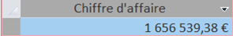

Mission 2 : Exploitation de la base de données KDou
Cette mission consistait à exploiter la base de données KDou via une interface low-code. L'objectif était de répondre à plusieurs problématiques grâce à des requêtes spécifiques, en extrayant des indicateurs clés.
Indicateur 1 : Produits vendus à 50 € ou moins en Italie ou Allemagne
Énoncé : Identifier les produits provenant d'Italie ou d'Allemagne et vendus à 50 € ou moins.
Interprétation : Ces informations permettent de repérer les offres compétitives de ces pays.
Résultats
| Produit | Pays | Prix |
|---|---|---|
| Produit A | Italie | 45 € |
| Produit B | Allemagne | 50 € |
Requête SQL
SELECT NomProd, Pays, PrixUnitCli
FROM Produit
WHERE (Pays = 'Italie' OR Pays = 'Allemagne') AND PrixUnitCli <= 50;
Indicateur 2 : Catégories de produits des fournisseurs singapouriens
Énoncé : Lister les catégories de produits vendus par des fournisseurs basés à Singapour.
Interprétation : Cette information aide à analyser l'offre spécifique de Singapour.
Résultats
- Catégorie 1 : Boissons
- Catégorie 2 : Condiments
Requête SQL
SELECT DISTINCT NomCateg
FROM Produit
JOIN Fournisseur ON Produit.NoFour = Fournisseur.NoFour
WHERE Fournisseur.Pays = 'Singapour';
Indicateur 3 : Prix moyen, minimum et maximum des produits
Énoncé : Calculer le prix moyen, le prix minimum et le prix maximum des produits.
Interprétation : Ces statistiques donnent un aperçu général des tarifs des produits de KDou.
Résultats :
- Prix moyen : 33,54 €
- Prix minimum : 2,08 €
- Prix maximum : 320 €
Requête SQL
SELECT AVG(PrixUnitCli) AS PrixMoyen, MIN(PrixUnitCli) AS PrixMin, MAX(PrixUnitCli) AS PrixMax
FROM Produit;
Indicateur 4 : Chiffre d'affaires total généré
Énoncé : Calculer le chiffre d'affaires total généré par les commandes.
Interprétation : Cet indicateur aide à évaluer la performance commerciale globale.
Résultats : 1 656 539,38 €
Requête SQL
SELECT SUM(PrixUnitCli * QteCom * (1 - Remise) + Port) AS ChiffreAffairesTotal
FROM DétailsCommande;